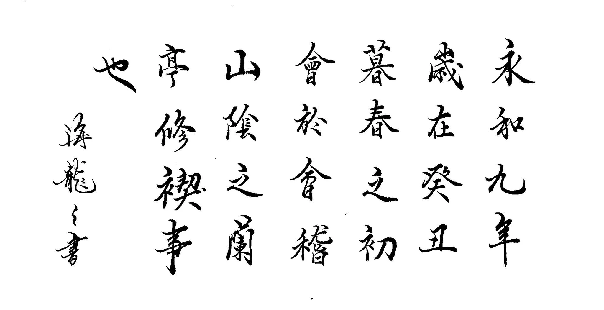
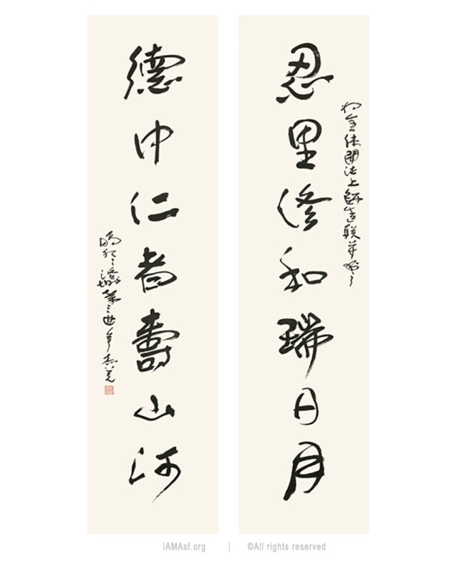

อักษรซิงชู
รูปแบบอักษรจีนกึ่งตัวเขียนและกึ่งตัวหวัด (Semi-cursive script หรือ Running script) ซึ่งเป็นหนึ่งใน 5 รูปแบบหลักของการเขียนพู่กันจีนโบราณลักษณะเด่นของอักษรซิงชู คือ เป็นอักษรที่อยู่กึ่งกลางระหว่าง อักษรข่ายซู (ตัวบรรจงมาตรฐานที่อ่านง่ายแต่เขียนช้า)และ อักษรเฉ่าซู
อักษรซิงซู คืออักษรที่ผสมผสานความอ่านง่ายของอักษรข่ายซู (ตัวบรรจง) เข้ากับความรวดเร็วและพลิ้วของอักษรเฉ่าซู (ตัวหวัด) ไว้อย่างลงตัว"